Viaje por la investigación interdisciplinaria
para descubrir a Leonora Carrington
Itzel Alejandra Jiménez Loranca
Ollintzin Mary Carmen Rosas Juárez
América Fabiola Sánchez León

Somos América, Ollin e Itzel
Y este es el relato de nuestro viaje interdisciplinario por el mundo de Leonora Carrington.

América Fabiola Sánchez León
Sistemas para la Interacción

Ollintzin Mary Carmen Rosas Juárez
Sistemas para la Interacción
Itzel Alejandra Jiménez Loranca
Estrategias en Comunicación
Como todo viaje, la interdisciplina implica descubrimiento y
transformación. Recuerda a la antigua alquimia, en la que elementos distintos colisionan entre sí para crear
armonía.

Interdisciplina
La interdisciplina es un enfoque en el que se crean metodologías y se entrelazan conceptos para
transformar a las propias ciencias y a la realidad compleja que abordan.
Fijamos nuestro destino en crear un sistema de museografía interactiva que
acompañara a
las personas a conocer la vida cotidiana de la artista en México.
Fijamos nuestro destino en crear un sistema de museografía interactiva que acompañara a las personas a conocer
la
vida cotidiana de la artista en México.
Sin embargo, por la naturaleza interdisciplinaria, la ruta a seguir no podía ser abordada con ninguna
metodología
conocida hasta ahora. Por eso, creamos 3 metodologías propias.
Sin embargo, por la naturaleza interdisciplinaria, la ruta a seguir no podía ser abordada con ninguna
metodología
conocida hasta ahora. Por eso, creamos 3 metodologías propias.
Recurso didáctico empleado en los museos para favorecer en los visitantes experiencias
significativas, es decir, aspectos lúdicos, de aprendizaje y rituales, a través de la interacción.
Metodología interdisciplinaria de investigación.
Para guiar la investigación, se conjuntaron en cuatro etapas los saberes de la museografía
interactiva, la ingeniería en desarrollo de software y principios de la magia caos.
Metodología de desarrollo de museografía interactiva.
Usada en la segunda etapa de la metodología principal. Siguiendo los pasos del proceso mágico de
Konstantinos, se integraron el diseño de información, la experiencia de usuario, el desarrollo web y
la escritura creativa.
Modelo de evaluación MiUX.
Experiencia de Usuario de la Museografía Interactiva. Reúne instrumentos de la comunicación
museográfica y la experiencia de usuario, para evaluar un sistema de museografía interactiva en el
contexto de una visita al museo.
Nuestro viaje no solo nos llevo a través de libros, también tuvimos que recorrer la república mexicana para
conocer los museos interactivos, casas museo y no me acuerdo de la otra categoría del país.

Todo esté viaje lo plasmamos en nuestra idónea comunicación de resultados, un libro mágico con el cual
participamos en el Premio Mexicano del Diseño y ganó una mención honorífica en la categoría de mejor tesis
de maestría.
Seguimos contando la historia de este trayecto interdisciplinario por el mundo de la artista en el VII
Congreso “Mujeres en la Ciencia, las Humanidades y todas las disciplinas” de la UAM y en el e-book “EXPERIENCE
DESIGN Korea & Latin America Research Exchange”
Mujeres en la Ciencia, las Humanidades y todas las
disciplinas.
En este el VII Congreso internacional, cuyo enfoque era la vida y educación en el contexto del
COVID-19 presentamos en la mesa de arte y desarrollo de productos y servicios de diseño el
artículo titulado “Leonorapp: Museografía interactiva en tiempos de COVID-19”
EXPERIENCE DESIGN Korea & Latin America Research Exchange.
En este libro interdiciplinario editado por la universidad de Kookmin participamos en el capítulo 3:
Experiencias interactivas. Nuestro artículo titulado “Alchemy, technology and quotidian life:
interactive museography for the Leonora Carrington House Studio”.